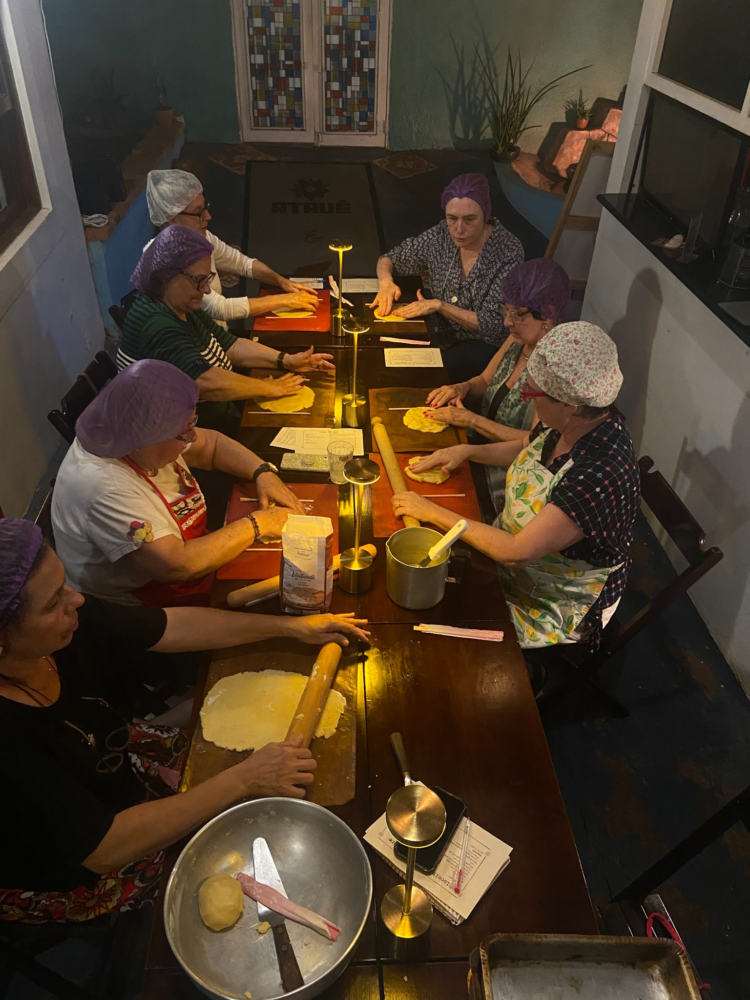
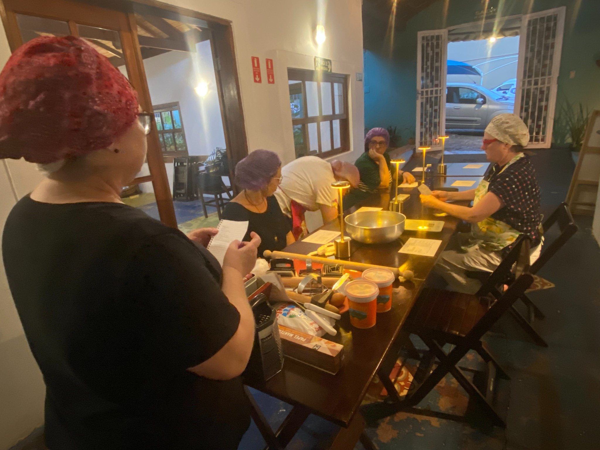
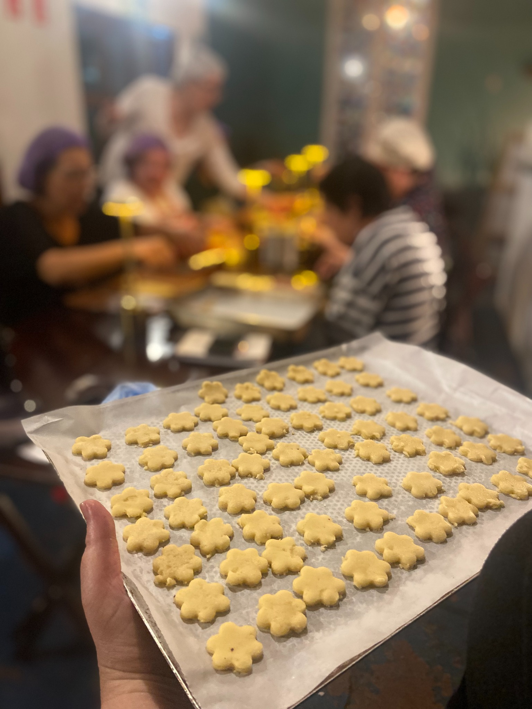
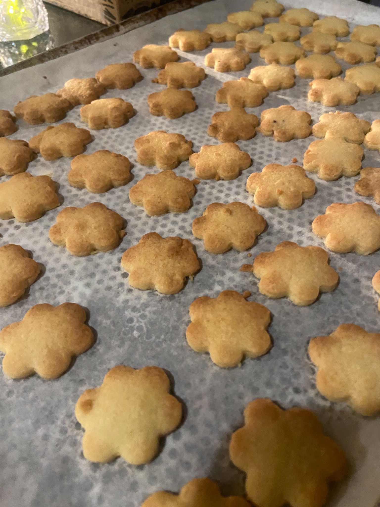
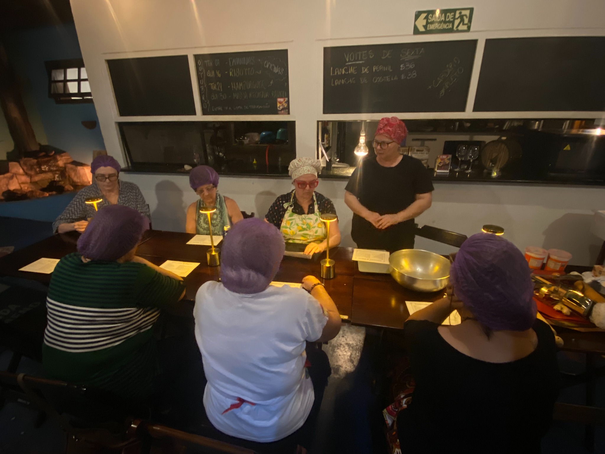
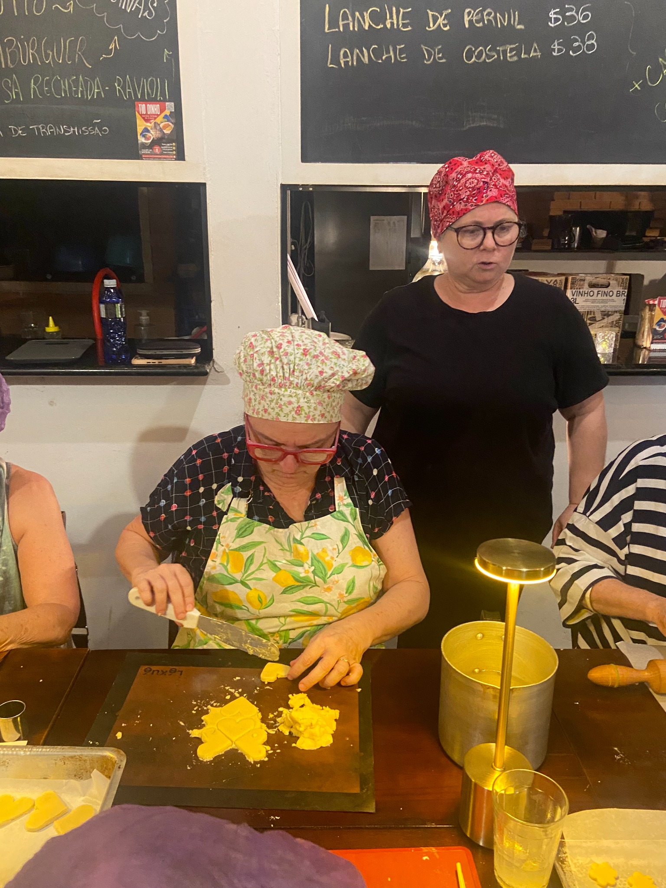

Biscoitos de Natal
Uma experiência para colocar as mãos na massa, sentir o cheiro das especiarias e começar o Natal fazendo presentes.

Natal feito à mão
Nesta edição especial do Cozinhando Juntos, recebemos a chef Cris Wiik para uma oficina dedicada a dois clássicos das festas de fim de ano: biscoitinhos de gengibre e lua de mel. Vamos aprender fazendo, conversando e compartilhando a mesa.
Massas, especiarias, textura, formato e forno.
Um grupo pequeno acompanhando todo o processo de perto.
Gengibre, mel, especiarias e biscoitos assando.
Tudo o que produzirmos será embalado como lembrancinha de Natal.



O preparo vira programa
Em vez de chegar apenas para comer, você participa do processo. As pessoas dividem bancada, utensílios, descobertas e conversa enquanto alguma coisa vai sendo construída pelas próprias mãos.
É também uma oportunidade de conhecer gente nova, trocar histórias e criar conexões em torno da mesa. O encontro faz parte da experiência tanto quanto a receita.
E aquilo que fazemos juntos na Paulistânia pode depois ganhar novas mesas: você aprende uma preparação que pode repetir em casa com amigos e família.
A experiência acontece aqui. O ritual pode continuar na sua casa.


Cris Wiik
Cris conduz a oficina de maneira próxima e prática, acompanhando os participantes durante a preparação dos biscoitos e compartilhando técnicas, percepções e pequenos cuidados que fazem diferença no resultado.
A proposta é aprender fazendo, num ambiente leve e coletivo, para que cada pessoa compreenda o processo e depois tenha autonomia para reproduzi-lo.
Como funciona
Do primeiro contato com a massa até a embalagem das lembrancinhas, você participa de todo o percurso.
Ingredientes, proporções, textura e os cuidados de cada preparação.
O grupo prepara os biscoitinhos de gengibre e lua de mel.
Entram os formatos, os cortadores e a criatividade.
Os biscoitos seguem para o forno e o aroma toma conta do espaço.
A produção vira lembrancinhas natalinas para levar para casa.
Venha como você é
- Para quem gosta de cozinhar e quer um programa diferente de fim de ano.
- Para quem quer aprender receitas para repetir em outros Natais.
- Para quem procura uma atividade para fazer com alguém da família.
- Para quem gosta de presentes feitos à mão.
- Para quem quer conhecer pessoas num ambiente descontraído e acolhedor.
- Não é necessário ter experiência prévia na cozinha.
Leve o ritual para casa
Depois de entender as massas e o processo, você pode transformar a preparação dos biscoitos em um programa familiar: colocar todo mundo em volta da mesa, separar cortadores, escolher embalagens e fazer juntos os presentes daquele ano.
Com o tempo, uma receita pode virar uma tradição da sua própria família.
Crianças podem participar acompanhadas por um adulto responsável.
Bilhete Consciente
A experiência é a mesma para todo mundo. Você escolhe o valor de acordo com sua realidade e com o quanto deseja apoiar a continuidade do projeto.
Um valor mais equilibrado, que ajuda a sustentar o projeto e suas próximas experiências.
Escolher moderadoPara quem pode contribuir um pouco mais e fortalecer a continuidade do Cozinhando Juntos.
Escolher incentivoDuração aproximada: 3 horas
Paulistânia Desvairada · Restaurante Tio Dinho
Rua João Leone, 51 · Sousas · Campinas
Vendemos bebidas no local. Caso prefira trazer sua própria garrafa, a taxa de rolha é de R$ 25 por garrafa.
Restrições alimentares devem ser informadas no ato da compra pelo e-mail paulistaniadesvairada@gmail.com. O cardápio poderá sofrer alterações sem aviso prévio.